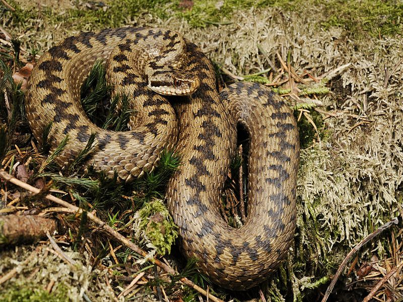

Europäische Sumpfschildkröte
Vipera berus
Das wohl bekannteste und auch meiste diskutierte Reptil ist zweifellos die Kreuzotter. Diese auch für den Menschen gefährliche Giftschlange bevorzugt Gebiete abseits der Wanderwege, ein Grund mehr, die gesetzlich befriedeten Schutzgebiete möglichst zu meiden. Als noch Torfstecher und Beerensucher alljährlich in großer Zahl in das Ried zogen, kam es immer wieder zu Schlangenbissen mit unangenehmen Folgen. Das Beutespektrum besteht vorwiegend aus Mäusen, Fröschen und Waldeidechsen